Es un entorno y lenguaje de programación con un enfoque en el análisis estadístico, el cual está formado por un conjunto de herramientas muy flexibles que pueden ampliarse fácilmente mediante paquetes, librerías o definiendo nuestras propias funciones. Este software también cuenta con un entorno de desarrollo integrado (IDE) que proporciona servicios integrales para facilitarle al programador el desarrollo de aplicaciones.
AritIDE es un entorno de desarrollo que provee las herramientas para la escritura de programas en lenguaje ARIT. Este IDE nos da la posibilidad de visualizar tanto la salida en consola de la ejecución del archivo fuente como los diversos reportes de la aplicación que se explican a más adelante.
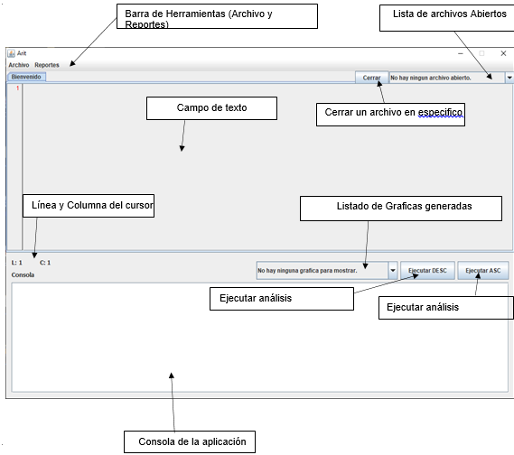En este menú podremos encontrar los submenús correspondientes para los archivos generados con el código Arit. A continuación daremos una breve descripción de cada uno de los submenús.
Creará un archivo nuevo para poder editarlo y ejecutarlo.
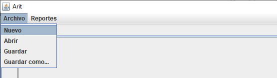Se debe de ingresar un nombre provisional para el nuevo archivo, se debe de tomar en cuenta que el archivo no ha sido guardado, solo se está guardando en la memoria volátil para posteriormente guardarlo en el disco duro de la pc.
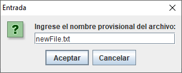Se mostrará un cuadro de texto en el cual el usuario final puede escribir código Arit, y ejecutarlo en cualquier momento.
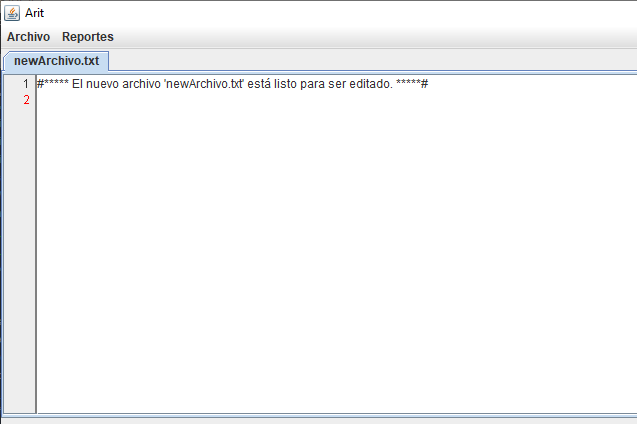Este Menú desplegará los submenús para mostrar reportes de errore, tabla de símbolos, y grafica de los árboles de cada analizador.
Esta opción le dará la oportunidad al usuario de visualizar en un nuevo JFrame en donde podrá encontrar dos pestañas en donde si visualizarán el reporte de errores y el reporte de tabla de símbolos.
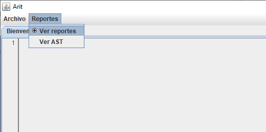El usuario podrá visualizar los errores que se originaron al momento de la ejecución. Por cada error podrá visualizar el Tipo, la fila y columna y una breve descripción acerca del error que se capturo.
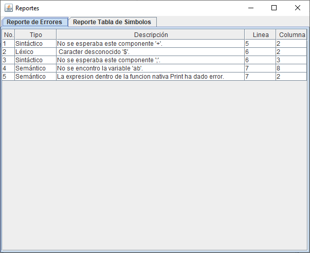En este reporte se visualizarán todos los símbolos que se declararon durante la ejecución del programa. Por cada símbolo se visualizará el identificador, el tipo, el ámbito, tamaño o dimensión o parámetros, declarada en y Referencias (En donde fueron utilizadas las variables.).
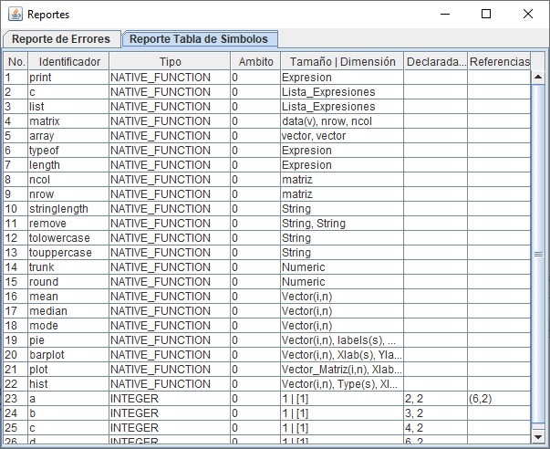En este reporte si visualizará una imagen del arbol AST, generado por la herramienta Graphviz. Este arbol se formará de acuerdo al tipo de gramática que fue utilizada.
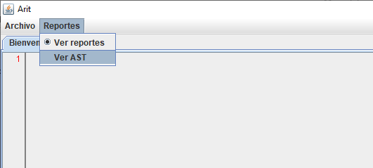El reporte del grafo se mostrará en un navegador, ya que el archivo es grafoAST.svg. AST generado con la gramática Ascendente.
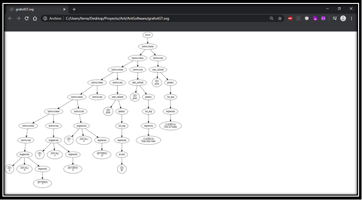AST generado con la gramática Descendente.
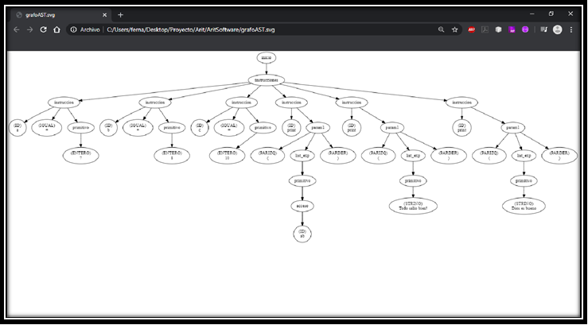En este campo se mostrarán todas las impresiones que se escribieron en el código. También se mostrarán los errores que se encontraron en el código. Estos resultados se mostrarán después de darle clic al botón Ejecutar ASC, o darle clic al botón Ejecutar DESC.
Se utilizó un clúster de kubernetes para publicar la página web, y un balanceador de carga para cada servicio, y la estrategia de Rolling update.
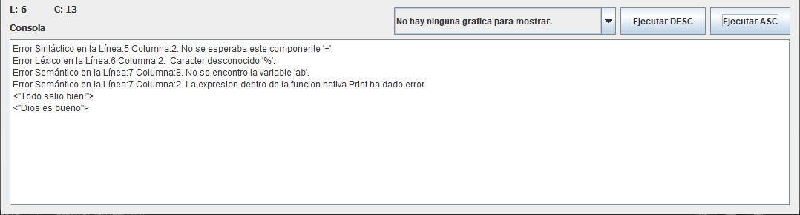Se mostrara en un JFrame las gráficas que se mandaron a crear desde el código Arit. Se selecciona la gráfica desde el Listado de Graficas Generadas.
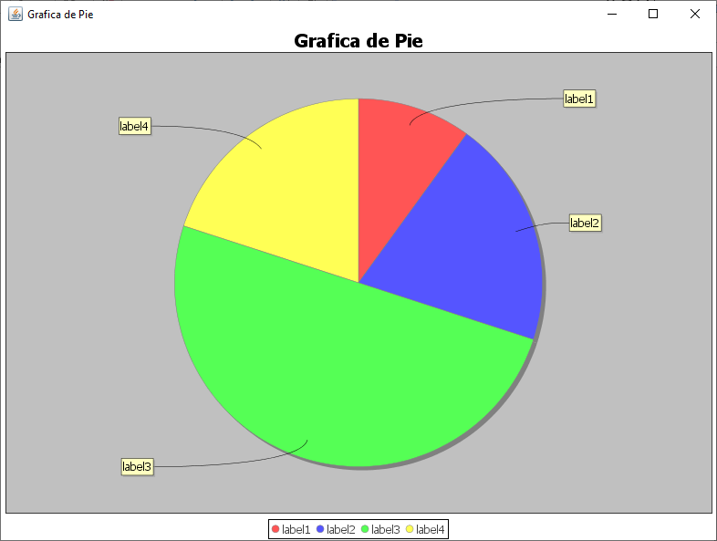